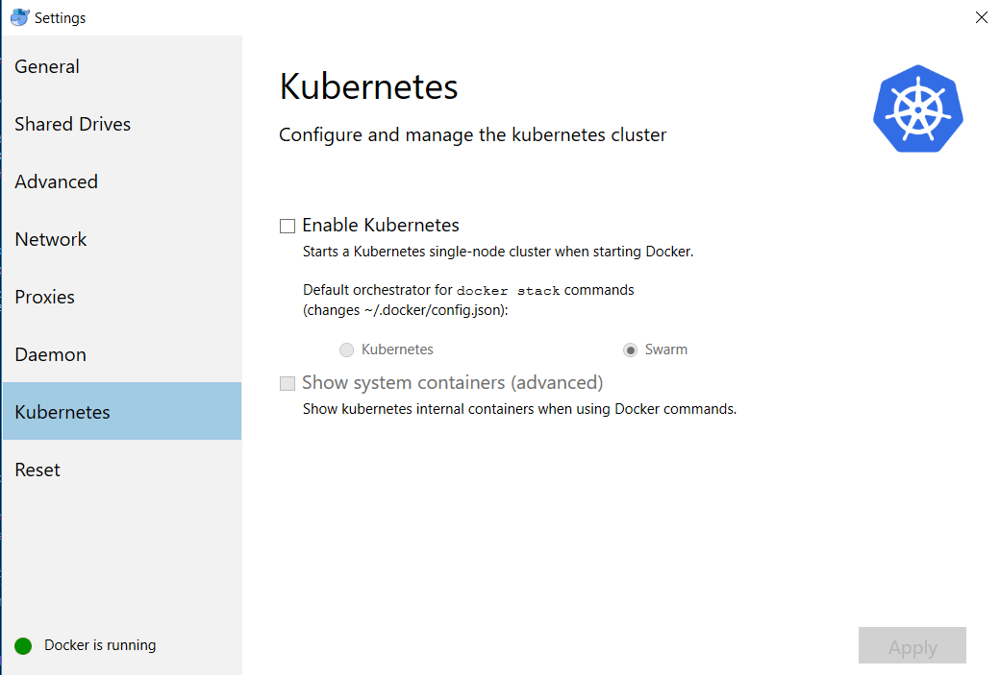
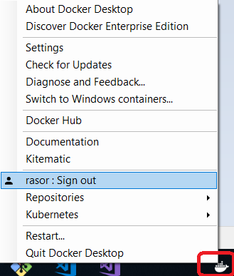
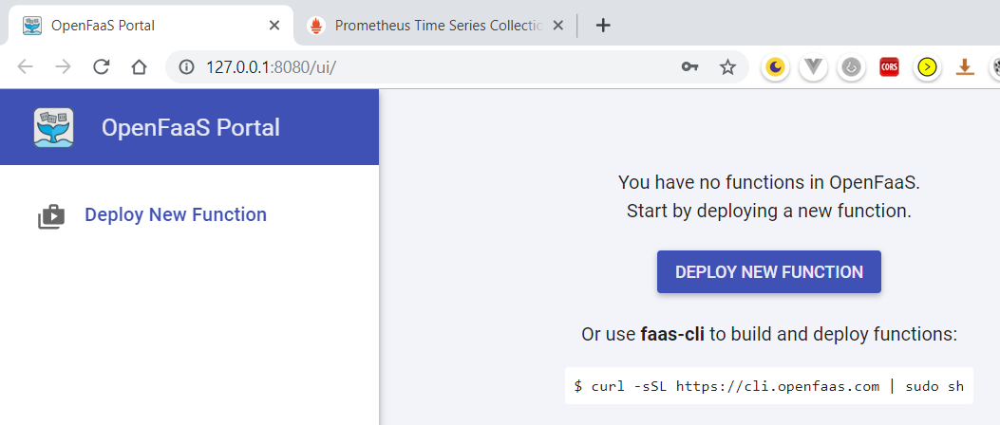
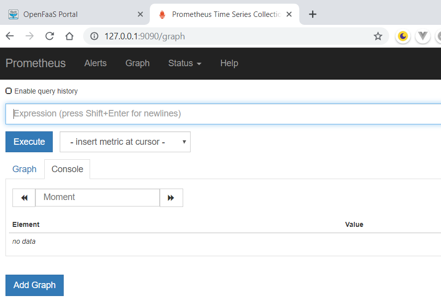
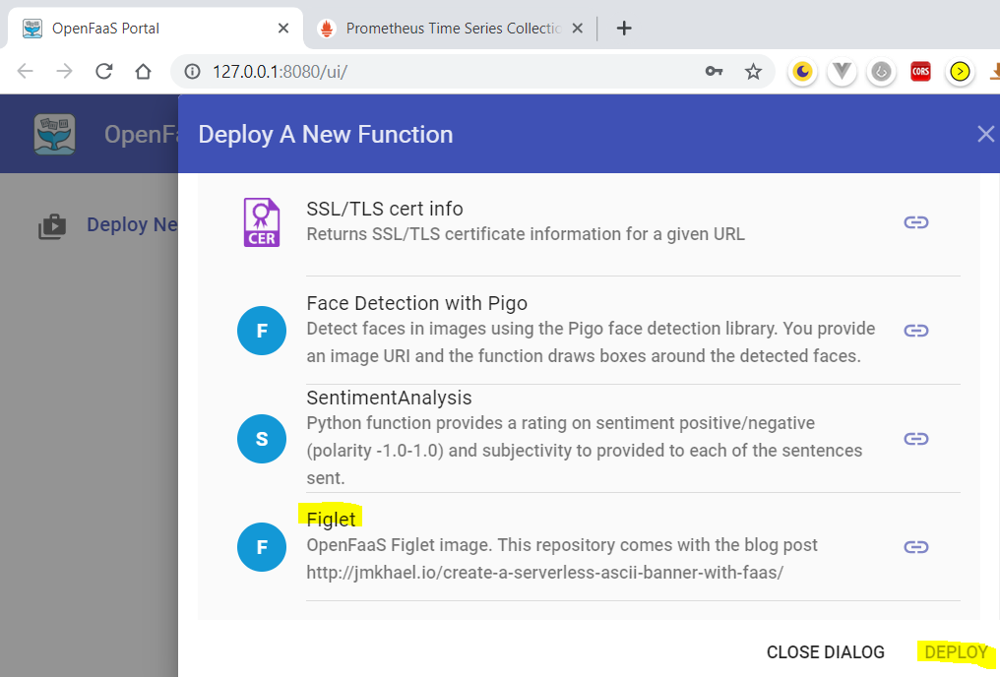
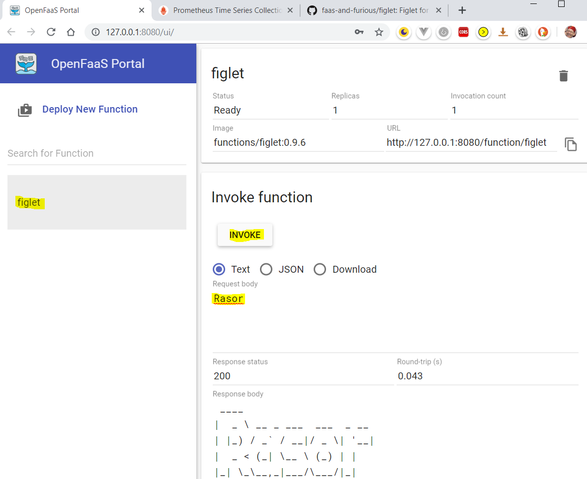
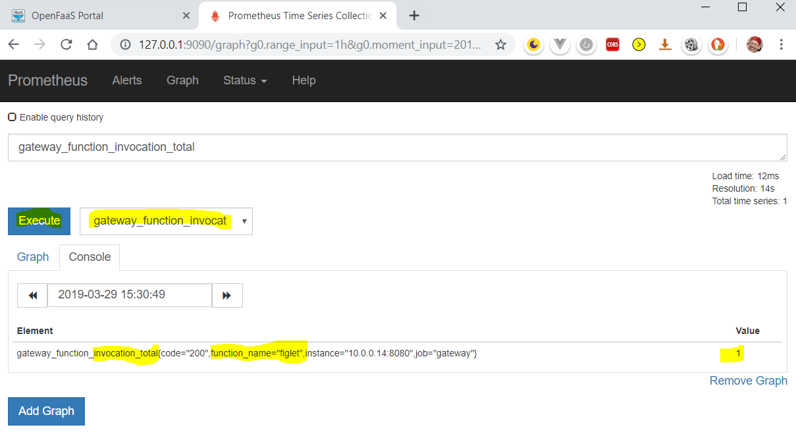
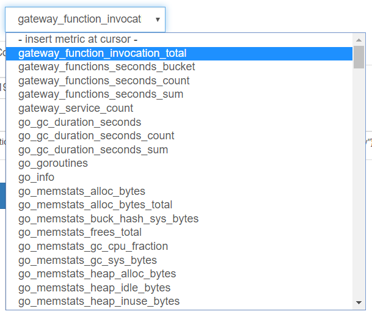

OpenFaaS on Windows Devbox
Posted on March 29, 2019 in Develop
Under Construction
Running OpenFaas in Dev on Windows
Finally the time has arrived, when I'll start using OpenFaas.
I first heard about OpenFaaS at a meetup in May 2018, 6 Cloud Native Talks, 1 Evening: Special KubeCon + CloudNativeCon EU Meetup! by OpenFaaS creator, Alex Ellis.
Next I bought the book Docker for Serverless Applications (D4S) by Chanwit Kaewkasi, but only skimmed it. I highly recommed it!
Now it is time to practice.
Why? - OpenFaaS vs Cloud Native Serverless
- Why not just use cloud native serverless?
- When you don't want the auto-kill feature.
- When you want serverless in you dev box
- You don't get pay-per-invocation?
- No you have to deploy a #k8s or #docker_swarm cluster. This can be as cheap by using #spot_instance s. @chanwits teach you how to do that.
- You don't get seemless integration with cloud native services?
- No - but aren't you used to that when you integrate to the services from your dev box?
How?
You can run OpenFaaS either on top of Kubernetes (k8s) or Docker Swarm.
Info: k8s or swarm gives you a cluster of machines, and deployed an application to it, with containers running in concert on multiple machines.
 (from OpenFaaS website).
(from OpenFaaS website).
It comes with autoscaling features, logging and prometheus.
Production
For deploying to OpenFaaS to a cloud container cluster there are some good guides on k8s like ofc-bootstrap. I guess you are managing the cluster here.
But there is a great guide in the D4S book chapter 7, where Chanwit uses AWS spot instances for running Swarm worker nodes. This solution can keep the price as low as Native Serverles, Chanwit claims. The challenge with spot instances is that you have to restart nodes, when they are marked for termination.
In this guide you are managing the cluster.
Chanwits code is here.
But OpenFaaS has build-in scaling and monitoring, so the managing part is limited.
Development
For local deployment there are guides, too.
- Swarm: Docker Swarm - OpenFaaS
- k8s: Kubernetes - OpenFaaS
- D4W + k8s: Run your own FaaS with OpenFaas and .Net Core
- In the D4S book chapter 4 teaches you to deploy OpenFaaS on Swarm.
Chanwits code is here.
Practice
I'll select Windows + Docker for Windows (D4W) + Hyper-V + Swarm.
On a Windows laptop you can run D4W on VirtualBox or Hyper-V hypervisor. I'll choose Hyper-V, since that was what I used previously. Using Kitematic you should be able to swap from Hyper-V to VirtualBox.
If you want to use VirtualBox you get it included with Kitematic in Docker Toolbox.
My reason for choosing Swarm is that I think it is easier to getting started with. In D4W kubernetes settings you can change from k8s to Swarm docker stack commands - this is configured in ~\.docker\config.json.
For a start I'll follow guide Docker Swarm - OpenFaaS
Prerequisites
Here is what you need
Examine Docker
As mentioned above - you need Docker for Windows either on top of Virtual Box or Hyper-V. I upgraded to latest - 2..0.0.3.
And my D4W settings is already set to Swarm.

# Verify Docker is running
docker info
# Containers: 4
# Running: 0
# Paused: 0
# Stopped: 4
# Images: 15
# Server Version: 18.09.2
# Storage Driver: overlay2
# Backing Filesystem: extfs
# Supports d_type: true
# Native Overlay Diff: true
# Logging Driver: json-file
# Cgroup Driver: cgroupfs
# Plugins:
# Volume: local
# Network: bridge host macvlan null overlay
# Log: awslogs fluentd gcplogs gelf journald json-file local logentries splunk syslog
# Swarm: inactive <-----------
# Runtimes: runc
# Default Runtime: runc
# Init Binary: docker-init
# ....
Docker Swarm
You also need to log in to Docker Hub, so you can upload some docker images.

With docker running next we need a Swarm cluster - from docker init we know that Swarm is inactive.
How can you operate Swarm?
docker swarm
# Commands:
# ca Display and rotate the root CA
# init Initialize a swarm
# join Join a swarm as a node and/or manager
# join-token Manage join tokens
# leave Leave the swarm
# unlock Unlock swarm
# unlock-key Manage the unlock key
# update Update the swarm
Swarm has manager- and worker nodes. We only need the manager.
On a devbox we'll just create a single-node swarm. When creating multi-node swarms you should use command docker-machine.
# Create a single-node swarm.
# Create 1st manager node - you need to add --advertise-addr, if the host has a public IP addr.
docker swarm init
# Swarm initialized: current node (ornhp66bt5rk928ekryv4xks4) is now a manager.
# To add a worker to this swarm, run the following command:
# docker swarm join --token SWMTKN-1-0rzaxpyyubb419j6qf9wubskxnypznknbaw5wiqcx05kt6ew1i-cje86tlt1s4fc69yy7cuwww0l 192.168.65.3:2377
# To add a manager to this swarm, run 'docker swarm join-token manager' and follow the instructions.
# If you don't note above worker-join info you can re-print it
docker swarm join-token worker
# To add a worker to this swarm, run the following command:
# docker swarm join --token SWMTKN-1-0rzaxpyyubb419j6qf9wubskxnypznknbaw5wiqcx05kt6ew1i-cje86tlt1s4fc69yy7cuwww0l 192.168.65.3:2377
# Now swarm is active with this windows shell being the manager node - meaning - the manager is not running in a container
docker info
# ....
# Log: awslogs fluentd gcplogs gelf journald json-file local logentries splunk syslog
# Swarm: active
# NodeID: ornhp66bt5rk928ekryv4xks4
# Is Manager: true
# ClusterID: 9pvxm96yzehiadacxf7k0e87e
# Managers: 1
# Nodes: 1
# Default Address Pool: 10.0.0.0/8
# SubnetSize: 24
# Orchestration:
# Task History Retention Limit: 5
# Raft:
# Snapshot Interval: 10000
# Number of Old Snapshots to Retain: 0
# Heartbeat Tick: 1
# Election Tick: 10
# Dispatcher:
# Heartbeat Period: 5 seconds
# CA Configuration:
# Expiry Duration: 3 months
# Force Rotate: 0
# Autolock Managers: false
# Root Rotation In Progress: false
# Node Address: 192.168.65.3
# Manager Addresses:
# 192.168.65.3:2377
# Runtimes: runc
# ....
# print more info about the swarm node(s)
docker node ls
# ID HOSTNAME STATUS AVAILABILITY MANAGER STATUS ENGINE VERSION
# ornhp66bt5rk928ekryv4xks4 * linuxkit-00155d102102 Ready Active Leader 18.09.2
Learn more about the Swarm clusters.
OpenFaaS
OpenFaaS Install
With a cluster running we can start OpenFaaS installation. This is done from a script that we fetch from github.
# Download docker-compose.yml file and deploy deploy_stack.ps1
cd C:\Users\yourname
# At time of writing the latest OpenFaaS release is https://github.com/openfaas/faas/tree/0.12.0
git clone https://github.com/openfaas/faas
cd faas
From Powershell prompt - run as admin - it will use a .NET dll for creating a password.
# Install OpenFaaS via ps1 - notice - it will create a user and password for logging in to the CLI
cd C:\Users\yourname\faas
Set-ExecutionPolicy RemoteSigned
./deploy_stack.ps1 # ./deploy_stack.sh for Linux or Mac
# Attempting to create credentials for gateway..
# [Credentials]
# username: admin
# password: b391be3c12d7dc8412a26eb13625f0d28bab2e578acb7473ea6c9e209e501f37
# Write-Output "b391be3c12d7dc8412a26eb13625f0d28bab2e578acb7473ea6c9e209e501f37" | faas-cli login --username=admin --password-stdin
# Enabling basic authentication for gateway..
# Deploying OpenFaaS core services
# Creating network func_functions
# Creating config func_prometheus_rules
# Creating config func_alertmanager_config
# Creating config func_prometheus_config
# Creating service func_faas-swarm
# Creating service func_nats
# Creating service func_queue-worker
# Creating service func_prometheus
# Creating service func_alertmanager
# Creating service func_gateway
# Prints:
docker stack ls
# NAME SERVICES ORCHESTRATOR
# func 6 Swarm
docker stack services func --format "table {{.Name}}\t{{.Ports}}"
# NAME PORTS
# func_gateway *:8080->8080/tcp
# func_faas-swarm
# func_queue-worker
# func_prometheus *:9090->9090/tcp
# func_nats
# func_alertmanager
OpenFaaS Usage
OpenFaaS Portal
So you've got (as the print above shows you)
- OpenFaaS Portal on http://127.0.0.1:8080
 - Prometheus on http://127.0.0.1:9090 
Lets test OpenFaaS.
- Press Deploy New Function.
- Select Figlet and press Deploy.
- Notice there is a link to the code deployed: faas-and-furious/figlet
 - Now test the function. Select it, enter an input string in Request body and invoke it.
- Output is displayed in Response body. Notice the invocation count telling it has been invoked once. And it only took 43ms to create its container, execute it and kill it again!

Lets test Prometheus.
- On the Graph page there is a dropdown list with a lot of counters. The first one is gateway_function_invocation_total. Select it and press Execute.
- Yes, also here we are told there has been one invocation, but we are even told name of function, where it was running and the http result status code.
- Notice you can get a graph view instead of this list view.
 - There are lots of counters. Here is a screenshot of the top ones.

So how about invoking figlet from curl?
curl localhost:8080/function/figlet -d "OpenFaaS"
# % Total % Received % Xferd Average Speed Time Time Time Current
# Dload Upload Total Spent Left Speed
# 100 290 100 282 100 8 5035 142 --:--:-- --:--:-- --:--:-- 5272
# ___ _____ ____
# / _ \ _ __ ___ _ __ | ___|_ _ __ _/ ___|
# | | | | '_ \ / _ \ '_ \| |_ / _` |/ _` \___ \
# | |_| | |_) | __/ | | | _| (_| | (_| |___) |
# \___/| .__/ \___|_| |_|_| \__,_|\__,_|____/
# |_|
Nice - we have a webservice then :-)
OpenFaaS CLI
For Windows you need to download OpenFaaS CLI - faas-cli.exe from openfaas/faas-cli/releases to e.g. C:\Program Files\Docker\Docker\Resources\bin\. In this way it will already be in the system path.
From GIT Bash - CLI Login does not work from CMD!
# Verify Faas CLI is responding
faas-cli version
# version: 0.8.6
# Login to OpenFaaS gateway
echo -n b391be3c12d7dc8412a26eb13625f0d28bab2e578acb7473ea6c9e209e501f37 | faas-cli login --username=admin --password-stdin
# Calling the OpenFaaS server to validate the credentials...
# WARNING! Communication is not secure, please consider using HTTPS. Letsencrypt.org offers free SSL/TLS certificates.
# credentials saved for admin http://127.0.0.1:8080
Info: faas-cli login will store your password as a hash at ~/.openfaas/config.yaml.
But when you open the OpenFaaS Portal at http://127.0.0.1:8080 you will also need the psw.
127.0.0.1 is the localhost IP. You can replace it with the internal (nat'ed) IP of your PC.
# What does the CLI give you?
faas-cli
# Available Commands:
# build Builds OpenFaaS function containers
# cloud OpenFaaS Cloud commands
# deploy Deploy OpenFaaS functions
# describe Describe an OpenFaaS function
# generate Generate Kubernetes CRD YAML file
# help Help about any command
# invoke Invoke an OpenFaaS function
# list List OpenFaaS functions
# login Log in to OpenFaaS gateway
# logout Log out from OpenFaaS gateway
# new Create a new template in the current folder with the name given as name
# push Push OpenFaaS functions to remote registry (Docker Hub)
# remove Remove deployed OpenFaaS functions
# secret OpenFaaS secret commands
# store OpenFaaS store commands
# template OpenFaaS template store and pull commands
# up Builds, pushes and deploys OpenFaaS function containers
# version Display the clients version information
# Flags:
# --filter string Wildcard to match with function names in YAML file
# -h, --help help for faas-cli
# --regex string Regex to match with function names in YAML file
# -f, --yaml string Path to YAML file describing function(s)
Now we can build our own functions.
More to be added
Links
OpenFaaS Cloud app
- How to build a Serverless Single Page App
- Deploy: openfaas/openfaas-cloud
- One-Click install on k8s cluster: openfaas-incubator/ofc-bootstrap - watch vid!
- Manual install: openfaas/openfaas-cloud
- Deploy docs: Deployment - OpenFaaS
- OpenFaaS on OpenShift - Red Hat OpenShift Blog
- Uses moby/buildkit
- docker-machine
- openfaas/workshop
- My own blogs
Cloud IaaS container cluster hosts
- DigitalOcean - k8s manager node for free - you pay for cluster nodes only. Min $30/Month.
- AWS
- Azure
- GCP
- Deploying with Docker | Heroku Dev Center
More Links
- Docker Secrets in action: Github integration
- ngrok - secure introspectable tunnels to localhost - use it to expose you localhost to the internet, when testing.
Books
The End